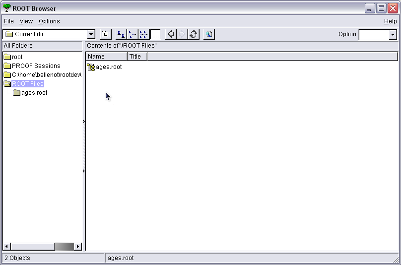

ROOT Exercise II
I/O (2/2)
The script creates a ROOT file. Quit ROOT and restart it, then use the TBrowser to look at the ROOT file. Draw the histogram that's stored in it.
You start the browser by new TBrowser(). Simply open the file in the current directory and then select it in the left panel. You can now see what's inside; double clicking on elements will call their Browse() method; for histograms it simply draws them.
After starting the TBrowser, you select the current directory in the left panel and you double-click on the ROOT file to open in the right panel, as shown here:

That shows the list of files, with teh file you have just opened in the right panel, like this:
Now double click the file in the right panel (or click on it in the left panel) to have a look inside; you will see the histogram stored in the file like this:

Just double-click the histogram icon in the right panel to draw it.
 Help
Help